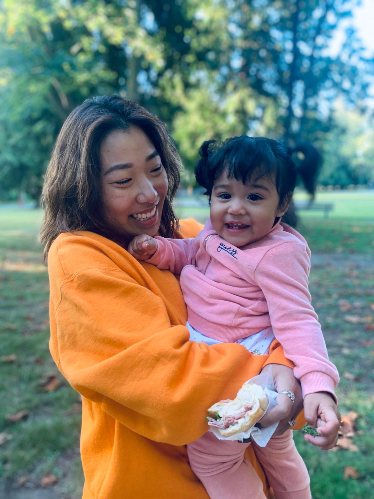

Hello, my name is Julianna Lin. I was born and raised in Vancouver, BC. I have a lot of passions in life but one of my favourite pastime is to curl up on the couch in front of the fireplace with a good book. But now I do not have much time for reading since I have tons of course work from BCIT.
A little bit more about me
 Here is a picture of my daughter and I on her 2nd birthday.
Right now my life is consumed with school and my daughter. It is a little hard to balance everything but I learned to do it with time management.
Since we have summer off, I will be taking my daughter to Taiwan with me to visit our family. She has never been to another country before, so this will be an adventure for her. I have been to Taiwan 4 times in my life since my grandparents are from there. While I visit Taiwan, I also try to visit another country in Asia at the same time.